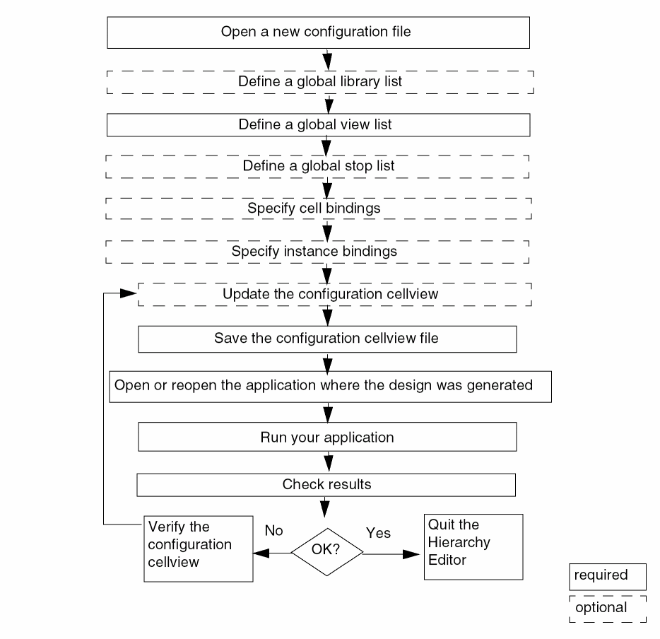

Creating a New Configuration
Use these steps to create and use a configuration with the Hierarchy Editor:

To create a new configuration,
-
Choose File – New Config or press
Control-n.
The New Configuration form appears. - In the Top Cell section, in the Library, Cell, and View fields, type or select the name of the library, cell, and view that you want to use as the top cellview of your design.
-
In the Global Bindings section, do one of the following:
-
In the Library List, View List, Stop List, and Constraint List fields, specify the default bindings for the entire design.
The global library list is a list of libraries that determines the libraries from which each cell is obtained. The global view list is a list of views that determines which view is selected for each object in the design. The global stop list specifies a list of views that are to be treated as leaf nodes, that is, they are not to be expanded. The global constraint list is a list of constraint views that determines the constraints that apply to the design.
The Stop List and Constraint List fields are optional.
List the entries in each list in order of preference. Separate entries with spaces.
You can use constants in the view list and stop list. A constant is a symbolic name used to represent a set of views.
You can use the asterisk character (*) as a wildcard in the view list. - Click Use Template to select a template that is compatible with the simulator you are running. Templates for simulators provide lists of views that are most often used for those simulators.
If the template you selected has filled in the Top Cell section of the New Configuration form, replace the names in the Library, Cell, and View fields with the top cellview you want to use. -
In the Library List, View List, Stop List, and Constraint List fields, specify the default bindings for the entire design.
- (Optional) In the Description field, type a brief statement describing the new configuration.
-
Click OK.
The New Configuration form closes. The Hierarchy Editor displays the new configuration.
Related topics
Using the Top Cell and Global Bindings Section in Hierarchy Editor
Creating and Editing Constants
Changing the Views in the View Choices List Box
Return to top